Snakes of China
284 living snake species are recorded in China in SnakeList: 91 venomous and 193 non-venomous, from 15 families.
- 284living species
- 91venomous
- 193non-venomous
- 15families
These totals count the unique living snake species SnakeList records in China. A species counts if it is recorded anywhere in the country, so not every snake lives in every part of it.
Species
Showing 284 species
- No photo yetAbor Hills Kukri SnakeOligodon melanozonatus
 Alashan PitviperGloydius cognatus
Alashan PitviperGloydius cognatus Anderson's Mountain KeelbackOpisthotropis andersonii
Anderson's Mountain KeelbackOpisthotropis andersonii Anderson's Reed SnakeCalamaria andersoni
Anderson's Reed SnakeCalamaria andersoni Anderson’s Slug SnakePareas andersonii
Anderson’s Slug SnakePareas andersonii Annulated Sea SnakeHydrophis cyanocinctus
Annulated Sea SnakeHydrophis cyanocinctus Ashy Kukri SnakeOligodon cinereus
Ashy Kukri SnakeOligodon cinereus Asiatic Water SnakeTrimerodytes aequifasciatus
Asiatic Water SnakeTrimerodytes aequifasciatus Assam Kukri SnakeOligodon catenatus
Assam Kukri SnakeOligodon catenatus Assam Mountain SnakePlagiopholis nuchalis
Assam Mountain SnakePlagiopholis nuchalis Bamboo SnakePseudoxenodon bambusicola
Bamboo SnakePseudoxenodon bambusicola Banded KraitBungarus fasciatus
Banded KraitBungarus fasciatus Banded Wolf SnakeLycodon fasciatus
Banded Wolf SnakeLycodon fasciatus- No photo yetBavi KeelbackRhabdophis callichroma
 Bella Rat SnakeArchelaphe bella
Bella Rat SnakeArchelaphe bella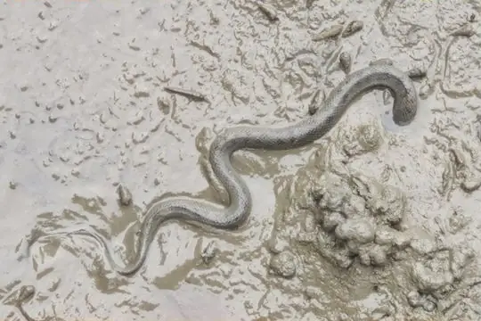
Bennett's Mud SnakeMyrrophis bennettii Big-tooth SnakeLycodon flavozonatus
Big-tooth SnakeLycodon flavozonatus Black Blind Snake (ater)Epictia ater
Black Blind Snake (ater)Epictia ater Black Snail-eating SnakePareas niger
Black Snail-eating SnakePareas niger Black-striped Rat SnakePtyas dhumnades
Black-striped Rat SnakePtyas dhumnades Blakeway's Mountain SnakePlagiopholis blakewayi
Blakeway's Mountain SnakePlagiopholis blakewayi Blue KraitBungarus candidus
Blue KraitBungarus candidus Blue-eyed Bush Rat SnakeGonyosoma coeruleum
Blue-eyed Bush Rat SnakeGonyosoma coeruleum Bocourt's Mud SnakeSubsessor bocourti
Bocourt's Mud SnakeSubsessor bocourti Boehme's Wolf SnakeLycodon synaptor
Boehme's Wolf SnakeLycodon synaptor Boie's Mud SnakeHypsiscopus plumbea
Boie's Mud SnakeHypsiscopus plumbea Boulenger's KeelbackHebius boulengeri
Boulenger's KeelbackHebius boulengeri Boulenger's Slug SnakePareas boulengeri
Boulenger's Slug SnakePareas boulengeri Brown Spotted PitviperProtobothrops mucrosquamatus
Brown Spotted PitviperProtobothrops mucrosquamatus Brown Trapezoid SnakeSmithophis bicolor
Brown Trapezoid SnakeSmithophis bicolor Buff Striped KeelbackAmphiesma stolatum
Buff Striped KeelbackAmphiesma stolatum- No photo yetBurbrink's KeelbackHerpetoreas burbrinki
 Burmese PythonPython bivittatus
Burmese PythonPython bivittatus Cave RacerElaphe taeniura
Cave RacerElaphe taeniura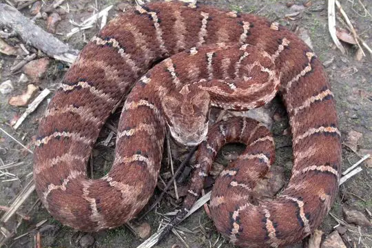
Central Asian PitviperGloydius intermedius- No photo yetCheckered KeelbackXenochrophis piscator
 Chequered KeelbackFowlea piscator
Chequered KeelbackFowlea piscator Chin Hills KeelbackHebius venningi
Chin Hills KeelbackHebius venningi Chinese Bamboo SnakePseudoxenodon karlschmidti
Chinese Bamboo SnakePseudoxenodon karlschmidti Chinese CobraNaja atra
Chinese CobraNaja atra Chinese Green Tree ViperTrimeresurus stejnegeri
Chinese Green Tree ViperTrimeresurus stejnegeri Chinese Keelback Water SnakeTrimerodytes percarinatus
Chinese Keelback Water SnakeTrimerodytes percarinatus Chinese Kukri SnakeOligodon chinensis
Chinese Kukri SnakeOligodon chinensis Chinese Leopard SnakeElaphe bimaculata
Chinese Leopard SnakeElaphe bimaculata Chinese Many-tooth SnakeSibynophis chinensis
Chinese Many-tooth SnakeSibynophis chinensis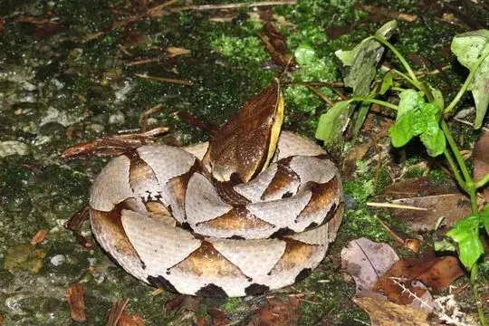
Chinese MoccasinDeinagkistrodon acutus Chinese Mountain KeelbackOpisthotropis kuatunensis
Chinese Mountain KeelbackOpisthotropis kuatunensis Chinese Mountain Pit ViperOvophis monticola
Chinese Mountain Pit ViperOvophis monticola Chinese Mountain SnakePlagiopholis styani
Chinese Mountain SnakePlagiopholis styani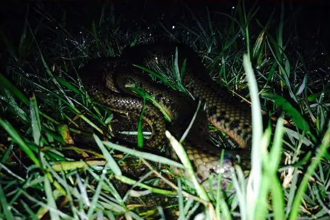
Chinese Mud SnakeMyrrophis chinensis Chinese Sea SnakeLaticauda semifasciata
Chinese Sea SnakeLaticauda semifasciata Chinese Slug SnakePareas chinensis
Chinese Slug SnakePareas chinensis Chiwen KeelbackRhabdophis chiwen
Chiwen KeelbackRhabdophis chiwen Collared Reed Snake (pavimentata)Calamaria pavimentata
Collared Reed Snake (pavimentata)Calamaria pavimentata Common Many-tooth SnakeSibynophis collaris
Common Many-tooth SnakeSibynophis collaris Common Mock ViperPsammodynastes pulverulentus
Common Mock ViperPsammodynastes pulverulentus Common Wolf Snake (aulicus)Lycodon aulicus
Common Wolf Snake (aulicus)Lycodon aulicus Common Wolf Snake (capucinus)Lycodon capucinus
Common Wolf Snake (capucinus)Lycodon capucinus- No photo yetCrying KeelbackHebius lacrima
- No photo yetCyclades Blunt-nosed ViperMacrovipera schweizeri
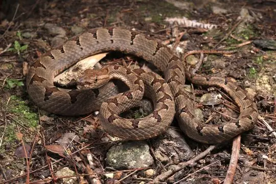
Dabie Mountains Pit ViperProtobothrops dabieshanensis Daming Odd-scaled SnakeAchalinus damingensis
Daming Odd-scaled SnakeAchalinus damingensis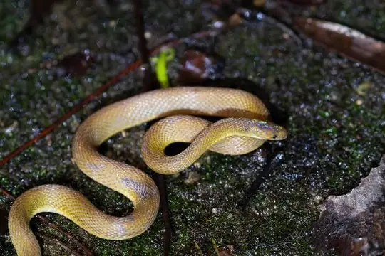
Dehua Odd–scaled SnakeAchalinus dehuaensis Diard's BlindsnakeArgyrophis diardii
Diard's BlindsnakeArgyrophis diardii Dione SnakeElaphe dione
Dione SnakeElaphe dione- No photo yetDoria's Green SnakePtyas doriae
 Double Striped Kukri SnakeOligodon bivirgatus
Double Striped Kukri SnakeOligodon bivirgatus Dwarf Sand BoaEryx miliaris
Dwarf Sand BoaEryx miliaris Eastern Bronzeback Tree SnakeDendrelaphis proarchos
Eastern Bronzeback Tree SnakeDendrelaphis proarchos Eastern Russel's ViperDaboia siamensis
Eastern Russel's ViperDaboia siamensis Eberhardt's Kukri SnakeOligodon eberhardti
Eberhardt's Kukri SnakeOligodon eberhardti Eight-lined KeelbackHebius octolineatus
Eight-lined KeelbackHebius octolineatus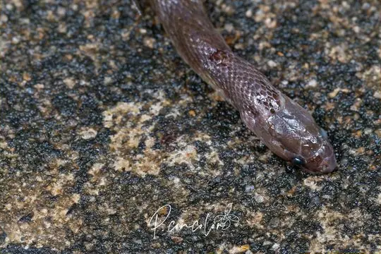
Emily’s Burrowing SnakeAchalinus emilyae Fasciolated Kukri SnakeOligodon fasciolatus
Fasciolated Kukri SnakeOligodon fasciolatus Fea ViperAzemiops feae
Fea ViperAzemiops feae Fire-back KeelbackHebius igneus
Fire-back KeelbackHebius igneus Formosa Kukri SnakeOligodon formosanus
Formosa Kukri SnakeOligodon formosanus Formosa Slug SnakePareas formosensis
Formosa Slug SnakePareas formosensis Formosa Wolf SnakeLycodon ruhstrati
Formosa Wolf SnakeLycodon ruhstrati Futsing Wolf SnakeLycodon futsingensis
Futsing Wolf SnakeLycodon futsingensis Gammie's Wolf SnakeLycodon gammiei
Gammie's Wolf SnakeLycodon gammiei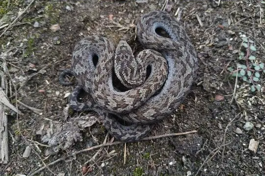
Glacier Pit ViperGloydius swild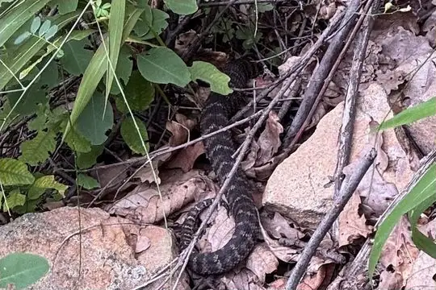
Gobi PitviperGloydius stejnegeri Gold-ringed Cat Snake (dendrophila)Boiga dendrophila
Gold-ringed Cat Snake (dendrophila)Boiga dendrophila Gongshan Wolf SnakeLycodon gongshan
Gongshan Wolf SnakeLycodon gongshan Gore's Bronzeback (biloreatus)Dendrelaphis biloreatus
Gore's Bronzeback (biloreatus)Dendrelaphis biloreatus Gray Cat SnakeBoiga siamensis
Gray Cat SnakeBoiga siamensis Greater Green SnakePtyas major
Greater Green SnakePtyas major Green Bamboo Leaf Pit ViperTrimeresurus medoensis
Green Bamboo Leaf Pit ViperTrimeresurus medoensis Green Cat SnakeBoiga cyanea
Green Cat SnakeBoiga cyanea Green KeelbackRhabdophis nigrocinctus
Green KeelbackRhabdophis nigrocinctus Green Rat Snake (nigromarginata)Ptyas nigromarginata
Green Rat Snake (nigromarginata)Ptyas nigromarginata Green Trinket SnakeGonyosoma prasinum
Green Trinket SnakeGonyosoma prasinum Guangdong KeelbackRhabdophis guangdongensis
Guangdong KeelbackRhabdophis guangdongensis Guangxi Cat SnakeBoiga guangxiensis
Guangxi Cat SnakeBoiga guangxiensis Guangxi Coral SnakeSinomicrurus peinani
Guangxi Coral SnakeSinomicrurus peinani Guangxi Kukri SnakeOligodon lungshenensis
Guangxi Kukri SnakeOligodon lungshenensis Guanxi Mountain KeelbackOpisthotropis guangxiensis
Guanxi Mountain KeelbackOpisthotropis guangxiensis Gumprecht's Pit ViperTrimeresurus gumprechti
Gumprecht's Pit ViperTrimeresurus gumprechti Guo's Green Pit ViperTrimeresurus guoi
Guo's Green Pit ViperTrimeresurus guoi Habu Pit ViperProtobothrops himalayanus
Habu Pit ViperProtobothrops himalayanus Hai Ha Mountain Stream KeelbackOpisthotropis haihaensis
Hai Ha Mountain Stream KeelbackOpisthotropis haihaensis Hainan Island Keelback SnakeRhabdophis confusus
Hainan Island Keelback SnakeRhabdophis confusus Hainan KeelbackRhabdophis adleri
Hainan KeelbackRhabdophis adleri- No photo yetHainan Odd-scaled SnakeAchalinus hainanus
 Hainan Rhinoceros SnakeGonyosoma hainanense
Hainan Rhinoceros SnakeGonyosoma hainanense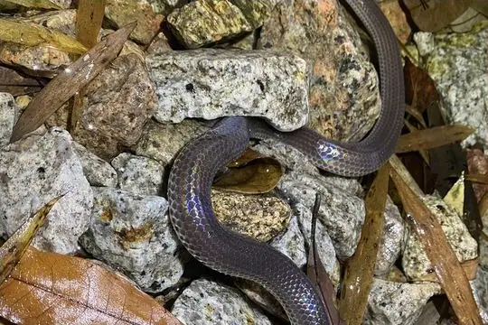
Hainan Sunbeam SnakeXenopeltis hainanensis Hainanese Stream SnakeTrimerodytes balteatus
Hainanese Stream SnakeTrimerodytes balteatus Halys Pit ViperGloydius halys
Halys Pit ViperGloydius halys Hampton's Kukri SnakeOligodon hamptoni
Hampton's Kukri SnakeOligodon hamptoni Hampton's Slug SnakePareas hamptoni
Hampton's Slug SnakePareas hamptoni Himalayan KeelbackHerpetoreas platyceps
Himalayan KeelbackHerpetoreas platyceps Hodgson's RatsnakeElaphe hodgsoni
Hodgson's RatsnakeElaphe hodgsoni- No photo yetHollinrake's BronzebackDendrelaphis hollinrakei
- No photo yetHong Kong Blind SnakeIndotyphlops lazelli
 Hong Kong Dwarf SnakeCalamaria septentrionalis
Hong Kong Dwarf SnakeCalamaria septentrionalis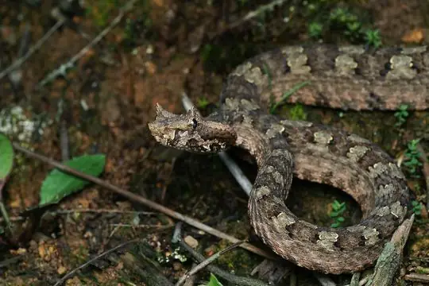
Horned Pit ViperProtobothrops cornutus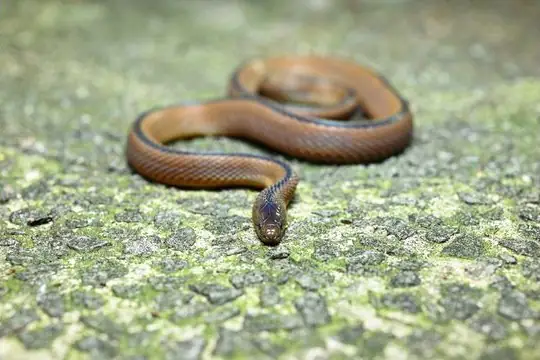
Huang’s Odd-scaled SnakeAchalinus huangjietangi Huaping Wolf SnakeLycodon cathaya
Huaping Wolf SnakeLycodon cathaya Hubei KeelbackRhabdophis nuchalis
Hubei KeelbackRhabdophis nuchalis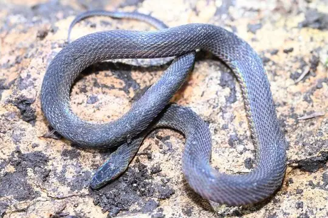
Hunan Odd-scale SnakeAchalinus hunanensis Ijima's Sea SnakeEmydocephalus ijimae
Ijima's Sea SnakeEmydocephalus ijimae Indian Rock PythonPython molurus
Indian Rock PythonPython molurus Indo-Chinese Rat SnakePtyas korros
Indo-Chinese Rat SnakePtyas korros Jack's Water SnakeHomalopsis mereljcoxi
Jack's Water SnakeHomalopsis mereljcoxi Japanese KeelbackHebius vibakari
Japanese KeelbackHebius vibakari Jingdong Water SnakeTrimerodytes yapingi
Jingdong Water SnakeTrimerodytes yapingi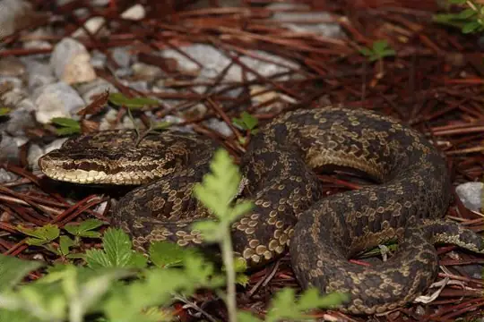
Jiuzhai PitviperGloydius lateralis Jodi's Pipe-SnakeCylindrophis jodiae
Jodi's Pipe-SnakeCylindrophis jodiae Johann's KeelbackHebius johannis
Johann's KeelbackHebius johannis Joynson's Kukri SnakeOligodon joynsoni
Joynson's Kukri SnakeOligodon joynsoni Kaulback's Lance-headed PitviperProtobothrops kaulbacki
Kaulback's Lance-headed PitviperProtobothrops kaulbacki Keeled Rat SnakePtyas carinata
Keeled Rat SnakePtyas carinata Kellog's Coral SnakeSinomicrurus kelloggi
Kellog's Coral SnakeSinomicrurus kelloggi Kelung Cat SnakeBoiga kraepelini
Kelung Cat SnakeBoiga kraepelini Khasi KeelbackHebius khasiensis
Khasi KeelbackHebius khasiensis King CobraOphiophagus hannah
King CobraOphiophagus hannah Koma's Formosa Slug SnakePareas komaii
Koma's Formosa Slug SnakePareas komaii Korean RatsnakeElaphe anomala
Korean RatsnakeElaphe anomala Kuatun KeelbackHebius craspedogaster
Kuatun KeelbackHebius craspedogaster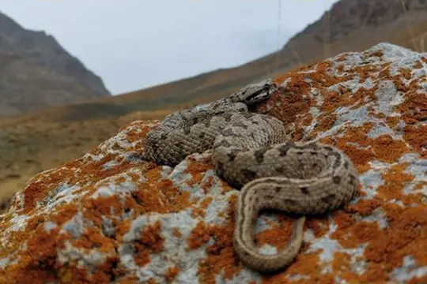
Kuhrang Mountain ViperMontivipera kuhrangica Lacroix Kukri SnakeOligodon lacroixi
Lacroix Kukri SnakeOligodon lacroixi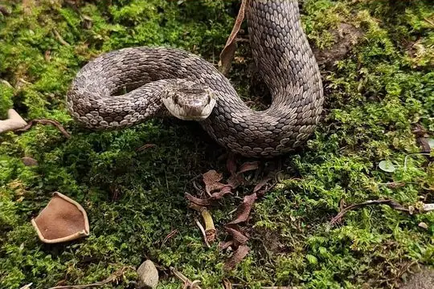
Lancang Plateau ViperGloydius huangi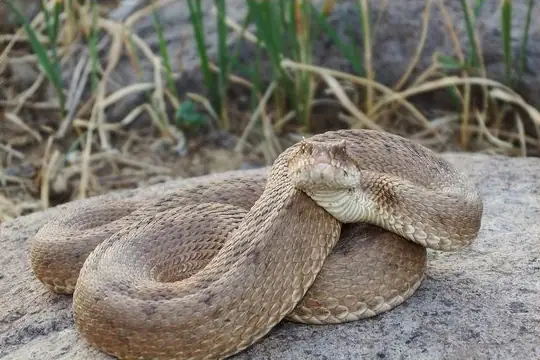
Latifi's ViperMontivipera latifii Lau's Mountain Stream SnakeOpisthotropis laui
Lau's Mountain Stream SnakeOpisthotropis laui Light-barred Kukri SnakeOligodon albocinctus
Light-barred Kukri SnakeOligodon albocinctus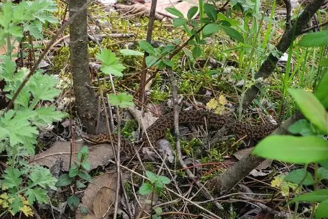
Likiang PitviperGloydius monticola Lined SmithophisSmithophis linearis
Lined SmithophisSmithophis linearis Lingnan Reed SnakeCalamaria arcana
Lingnan Reed SnakeCalamaria arcana Luding Wolf SnakeLycodon multizonatus
Luding Wolf SnakeLycodon multizonatus MacLelland's Coral SnakeSinomicrurus macclellandi
MacLelland's Coral SnakeSinomicrurus macclellandi Malayan Banded Wolf SnakeLycodon subcinctus
Malayan Banded Wolf SnakeLycodon subcinctus Mandarin RatsnakeEuprepiophis mandarinus
Mandarin RatsnakeEuprepiophis mandarinus Many-banded Green SnakePtyas multicincta
Many-banded Green SnakePtyas multicincta Many-banded KraitBungarus multicinctus
Many-banded KraitBungarus multicinctus Many-spotted Cat SnakeBoiga multomaculata
Many-spotted Cat SnakeBoiga multomaculata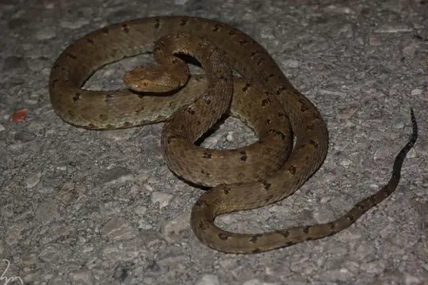
Mao-lan PitviperProtobothrops maolanensis Maxwell's Mountain KeelbackOpisthotropis maxwelli
Maxwell's Mountain KeelbackOpisthotropis maxwelli Medog Kukri SnakeOligodon lipipengi
Medog Kukri SnakeOligodon lipipengi Modest KeelbackHebius modestus
Modest KeelbackHebius modestus Moellendorff's Trinket SnakeElaphe moellendorffi
Moellendorff's Trinket SnakeElaphe moellendorffi Mount Gongga KeelbackRhabdophis pentasupralabialis
Mount Gongga KeelbackRhabdophis pentasupralabialis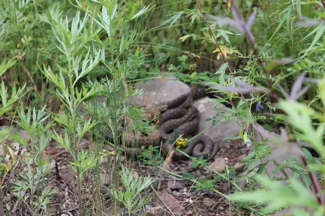
Mount Liupan PitviperGloydius liupanensis Mount Omei KeelbackHebius optatus
Mount Omei KeelbackHebius optatus Mountain Slug SnakePareas margaritophorus
Mountain Slug SnakePareas margaritophorus Mountain Worm-eating SnakeTrachischium monticola
Mountain Worm-eating SnakeTrachischium monticola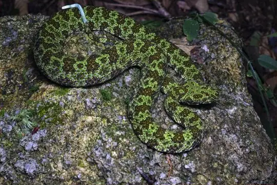
Mt. Mang PitviperProtobothrops mangshanensis Mêdog Himalayas KeelbackHerpetoreas tpser
Mêdog Himalayas KeelbackHerpetoreas tpser Nabang PitviperTrimeresurus caudornatus
Nabang PitviperTrimeresurus caudornatus Nagao Kukri SnakeOligodon nagao
Nagao Kukri SnakeOligodon nagao Namdong Wolf SnakeLycodon chapaensis
Namdong Wolf SnakeLycodon chapaensis Nganson BronzebackDendrelaphis ngansonensis
Nganson BronzebackDendrelaphis ngansonensis Ningshaan Kukri SnakeStichophanes ningshaanensis
Ningshaan Kukri SnakeStichophanes ningshaanensis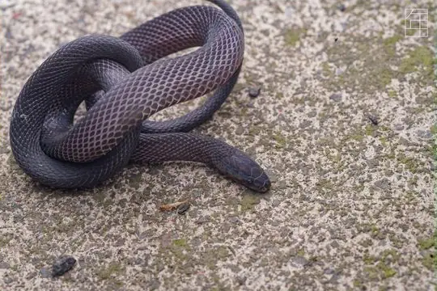
Ningshan Odd-scaled SnakeAchalinus ningshanensis Northeastern Hill KraitBungarus bungaroides
Northeastern Hill KraitBungarus bungaroides Northern Red-necked KeelbackRhabdophis helleri
Northern Red-necked KeelbackRhabdophis helleri- No photo yetNujiang Pit ViperGloydius lipipengi
 Orange-collared KeelbackRhabdophis himalayanus
Orange-collared KeelbackRhabdophis himalayanus Oriental RatsnakePtyas mucosa
Oriental RatsnakePtyas mucosa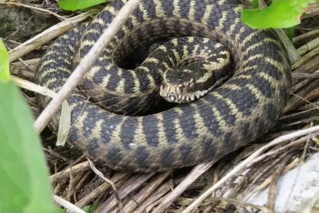
Orlov's ViperVipera orlovi Ornate Kukri SnakeOligodon ornatus
Ornate Kukri SnakeOligodon ornatus Painted Wolf SnakeLycodon pictus
Painted Wolf SnakeLycodon pictus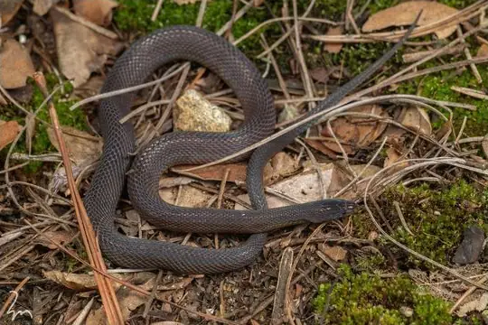
Panzhihua Odd-scaled SnakeAchalinus panzhihuaensis Pere David's Rat SnakeElaphe davidi
Pere David's Rat SnakeElaphe davidi- No photo yetPingbian Odd-scaled SnakeAchalinus pingbianensis
- No photo yetPlain SeasnakeHydrophis inornatus
 Pope's Bamboo Pit ViperTrimeresurus popeiorum
Pope's Bamboo Pit ViperTrimeresurus popeiorum Pope's KeelbackHebius popei
Pope's KeelbackHebius popei- No photo yetQin Emperor Rat SnakeElaphe xiphodonta
 Radiated RatsnakeCoelognathus radiatus
Radiated RatsnakeCoelognathus radiatus Rainbow Mud SnakeEnhydris enhydris
Rainbow Mud SnakeEnhydris enhydris Recluse Wolf SnakeLycodon obvelatus
Recluse Wolf SnakeLycodon obvelatus Red Bamboo SnakeOreocryptophis porphyraceus
Red Bamboo SnakeOreocryptophis porphyraceus Ringed Keelback Water SnakeTrimerodytes annularis
Ringed Keelback Water SnakeTrimerodytes annularis Rose Big-tooth SnakeLycodon rosozonatus
Rose Big-tooth SnakeLycodon rosozonatus Rosebelly Worm-eating SnakeTrachischium guentheri
Rosebelly Worm-eating SnakeTrachischium guentheri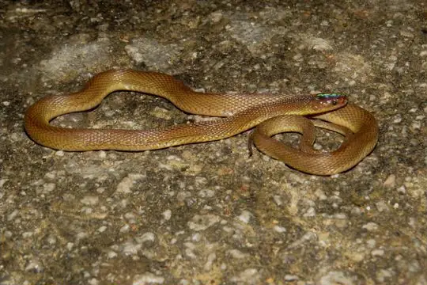
Rufous Burrowing SnakeAchalinus rufescens- No photo yetSangzhi Keelback SnakeHebius sangzhiensis
- No photo yetSarso Island RacerPlatyceps insulanus
 Serrate-banded Wolf SnakeLycodon serratus
Serrate-banded Wolf SnakeLycodon serratus- No photo yetShangri-La Hot Spring SnakeThermophis shangrila
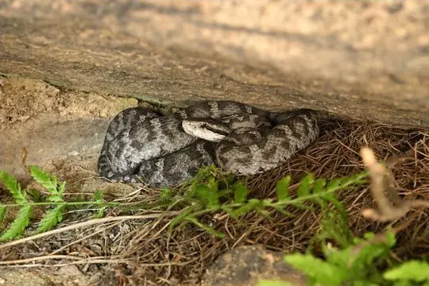
Shedao Island PitviperGloydius shedaoensis Shenzhen Mountain Stream SnakeOpisthotropis shenzhenensis
Shenzhen Mountain Stream SnakeOpisthotropis shenzhenensis Short-tailed Pit ViperGloydius brevicauda
Short-tailed Pit ViperGloydius brevicauda Sichuan Hot-Spring KeelbackThermophis zhaoermii
Sichuan Hot-Spring KeelbackThermophis zhaoermii Sichuan Mountain KeelbackOpisthotropis latouchii
Sichuan Mountain KeelbackOpisthotropis latouchii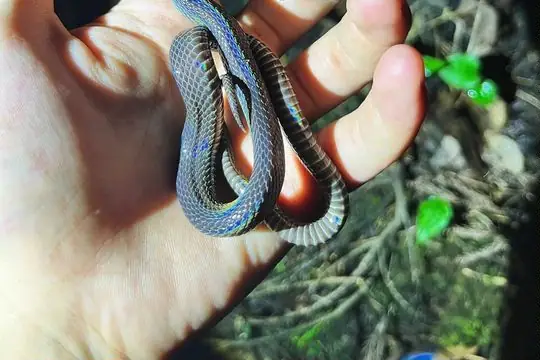
Sichuan Odd-scaled SnakeAchalinus meiguensis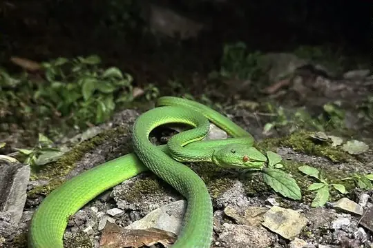
Sichuan PitviperTrimeresurus sichuanensis Sichuan Wolf SnakeLycodon liuchengchaoi
Sichuan Wolf SnakeLycodon liuchengchaoi Sikkim KeelbackHerpetoreas sieboldii
Sikkim KeelbackHerpetoreas sieboldii Slender-necked SeasnakeHydrophis melanocephalus
Slender-necked SeasnakeHydrophis melanocephalus- No photo yetSouthern Red-banded SnakeLycodon meridionale
 Spotted Slug SnakePareas macularius
Spotted Slug SnakePareas macularius Spotted Whip SnakeHemorrhois ravergieri
Spotted Whip SnakeHemorrhois ravergieri Stanley's Slug SnakePareas stanleyi
Stanley's Slug SnakePareas stanleyi Stejneger's Bamboo SnakePseudoxenodon stejnegeri
Stejneger's Bamboo SnakePseudoxenodon stejnegeri Steppe Ribbon RacerPsammophis lineolatus
Steppe Ribbon RacerPsammophis lineolatus Steppe ViperVipera renardi
Steppe ViperVipera renardi Stoke's SeasnakeHydrophis stokesii
Stoke's SeasnakeHydrophis stokesii Stoliczk's Tawny Cat SnakeBoiga stoliczkae
Stoliczk's Tawny Cat SnakeBoiga stoliczkae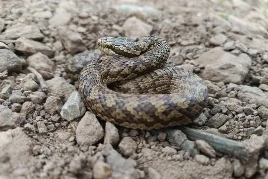
Strauch's PitviperGloydius strauchi Striped Blind SnakeRamphotyphlops lineatus
Striped Blind SnakeRamphotyphlops lineatus Striped Sea SnakeHydrophis fasciatus
Striped Sea SnakeHydrophis fasciatus Suzhen’s KraitBungarus suzhenae
Suzhen’s KraitBungarus suzhenae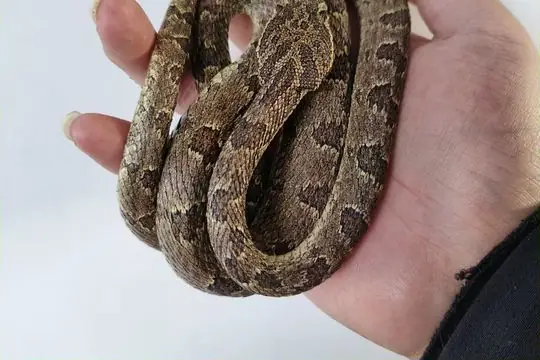
Szechwan Pit ViperProtobothrops xiangchengensis Szechwan Rat SnakeEuprepiophis perlaceus
Szechwan Rat SnakeEuprepiophis perlaceus Taiwan Mountain PitviperOvophis makazayazaya
Taiwan Mountain PitviperOvophis makazayazaya Tengchong Keelback SnakeHebius septemlineatus
Tengchong Keelback SnakeHebius septemlineatus Tibetan Pit ViperTrimeresurus tibetanus
Tibetan Pit ViperTrimeresurus tibetanus Tiger Slug-eating SnakePareas tigerinus
Tiger Slug-eating SnakePareas tigerinus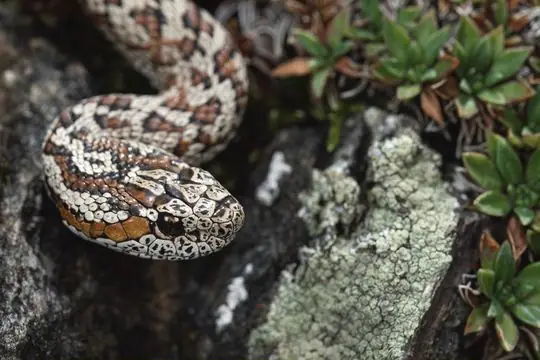
Tongtianhe Pit ViperGloydius rubromaculatus Tonkin Mountain KeelbackOpisthotropis lateralis
Tonkin Mountain KeelbackOpisthotropis lateralis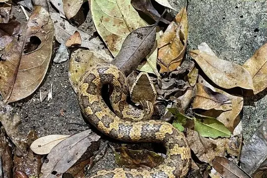
Tonkin PitviperOvophis tonkinensis Transcaucasian Long-nosed ViperVipera transcaucasiana
Transcaucasian Long-nosed ViperVipera transcaucasiana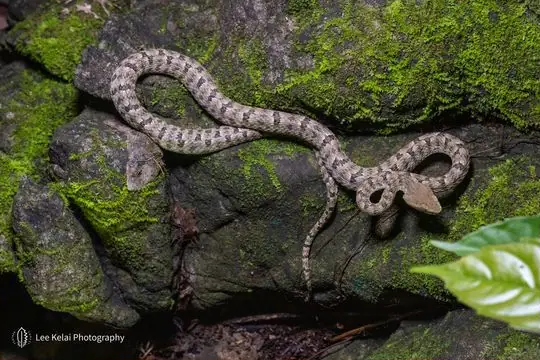
Trungkhanh PitviperProtobothrops trungkhanhensis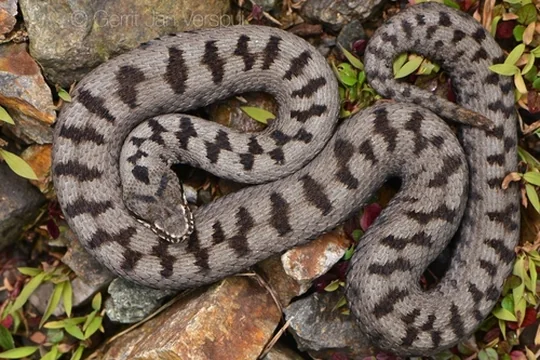
Turkish ViperVipera barani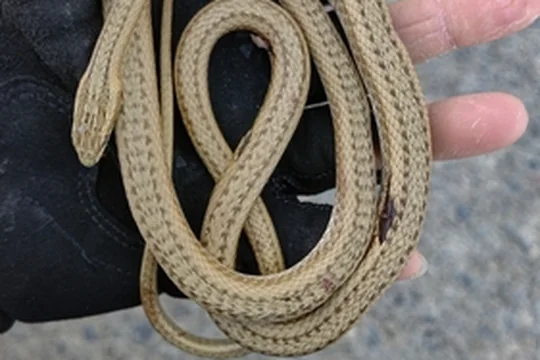
Turpan Sand SnakePsammophis turpanensis Twin-spotted Wolf SnakeLycodon jara
Twin-spotted Wolf SnakeLycodon jara Vietnam Water SnakeHebius chapaensis
Vietnam Water SnakeHebius chapaensis Vindum's Slug EaterPareas vindumi
Vindum's Slug EaterPareas vindumi Vogel's BronzebackDendrelaphis vogeli
Vogel's BronzebackDendrelaphis vogeli Wa Shan KeelbackHebius metusia
Wa Shan KeelbackHebius metusia Wart SnakeAcrochordus granulatus
Wart SnakeAcrochordus granulatus Weixi Keelback SnakeHebius weixiensis
Weixi Keelback SnakeHebius weixiensis White-banded Wolf SnakeLycodon septentrionalis
White-banded Wolf SnakeLycodon septentrionalis- No photo yetWhite-eyed KeelbackAmphiesmoides ornaticeps
 White-headed Blind SnakeIndotyphlops albiceps
White-headed Blind SnakeIndotyphlops albiceps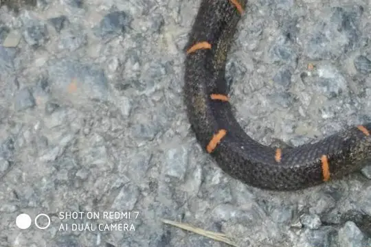
White-headed Fea ViperAzemiops kharini White-lipped PitviperTrimeresurus albolabris
White-lipped PitviperTrimeresurus albolabris Xiaoheishan Slug-eater SnakePareas nigriceps
Xiaoheishan Slug-eater SnakePareas nigriceps- No photo yetXizang Hot-spring Keel-backThermophis baileyi
 Yanbian Keelback SnakeHebius yanbianensis
Yanbian Keelback SnakeHebius yanbianensis- No photo yetYang’s Odd-scaled SnakeAchalinus yangdatongi
 Yellow Sea SnakeHydrophis spiralis
Yellow Sea SnakeHydrophis spiralis Yellow Striped SnakeCoelognathus flavolineatus
Yellow Striped SnakeCoelognathus flavolineatus Yellow-spotted Keelback Water SnakeFowlea flavipunctatus
Yellow-spotted Keelback Water SnakeFowlea flavipunctatus Youjiang Keelback SnakeHebius youjiangensis
Youjiang Keelback SnakeHebius youjiangensis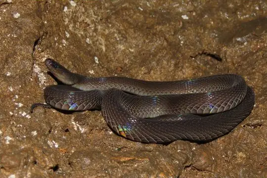
Yuinkai Mountains Burrowing SnakeAchalinus yunkaiensis Yunnan Annulate KeelbackTrimerodytes yunnanensis
Yunnan Annulate KeelbackTrimerodytes yunnanensis Yunnan KeelbackHebius clerki
Yunnan KeelbackHebius clerki Yunnan Olive KeelbackFowlea yunnanensis
Yunnan Olive KeelbackFowlea yunnanensis Yunnan Pit ViperTrimeresurus yunnanensis
Yunnan Pit ViperTrimeresurus yunnanensis- No photo yetYunnan Reed SnakeCalamaria yunnanensis
 Zayu Wolf SnakeLycodon zayuensis
Zayu Wolf SnakeLycodon zayuensis Zayuan Mountain PitviperOvophis zayuensis
Zayuan Mountain PitviperOvophis zayuensis Zhao's Mountain Stream SnakeOpisthotropis zhaoermii
Zhao's Mountain Stream SnakeOpisthotropis zhaoermii Ziggy Stardust SnakeParafimbrios lao
Ziggy Stardust SnakeParafimbrios lao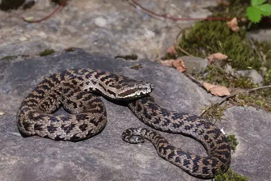
Zoige Pit ViperGloydius angusticeps Zoige RatsnakeElaphe zoigeensis
Zoige RatsnakeElaphe zoigeensis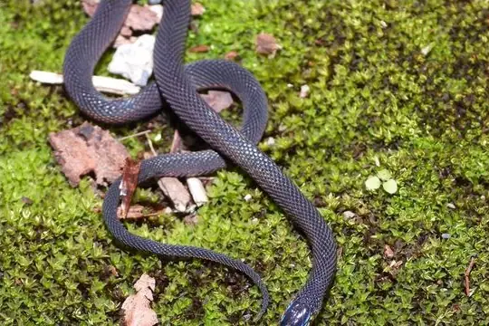
Zong's Odd-scaled SnakeAchalinus jinggangensis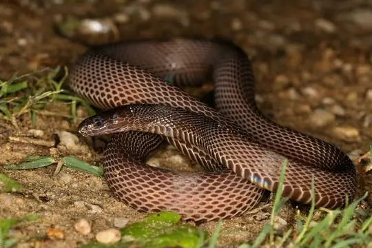
Zug's Odd-scaled SnakeAchalinus zugorum 张氏后棱蛇Opisthotropis hungtai
张氏后棱蛇Opisthotropis hungtai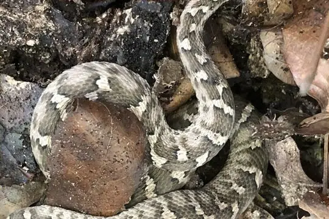
Gloydius changdaoensis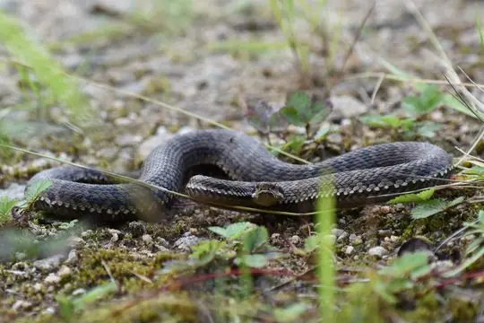
Gloydius qinlingensis Hebius nigriventer
Hebius nigriventer Opisthotropis cheni
Opisthotropis cheni Pareas geminatus
Pareas geminatus- No photo yetPareas menglaensis
- No photo yetPareas xuelinensis
- No photo yetPlatyceps tessellata
- No photo yetSinomicrurus houi
- No photo yetTrimeresurus yingjiangensis
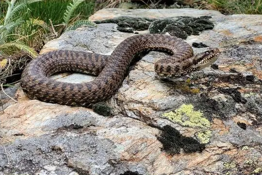
Vipera walser- No photo yetZaocys dhumnades
No snakes in China match.
China’s snakes in numbers
- Families: Colubridae 160, Viperidae 53, Elapidae 19, Pareidae 16, Xenodermidae 16, Homalopsidae 6, Typhlopidae 4, Psammophiidae 2, Pythonidae 2, Acrochordidae 1, Boidae 1, Cylindrophiidae 1, Leptotyphlopidae 1, Pseudaspididae 1, Xenopeltidae 1.
- 96 are recorded in no other country or territory in SnakeList: Anderson's Reed Snake, Black Snail-eating Snake, Boehme's Wolf Snake, Boulenger's Slug Snake, Burbrink's Keelback, Central Asian Pitviper, Chinese Mountain Keelback, Chiwen Keelback, Cyclades Blunt-nosed Viper, Dabie Mountains Pit Viper, Daming Odd-scaled Snake, Dehua Odd–scaled Snake and 84 more.
How precisely they are recorded
Of the 284 living species recorded in China, 203 are recorded by province in SnakeList’s data; 81 are recorded only for China as a whole, so the province pages list them as possible rather than recorded. SnakeList records each species by province, not by exact spot, so a species listed for a province may live in only part of it.
Provinces
The provinces where SnakeList records snakes, with how many living species are recorded in each. Each page has its species, venomous snakes, families, the species found only there, its cities and neighbours.
- Anhui 24 species
- Beijing 10 species
- Chongqing 15 species
- Fujian 43 species
- Gansu 8 species
- Guangdong 77 species
- Guangxi 56 species
- Guizhou 46 species
- Hainan 42 species
- Hebei 10 species
- Heilongjiang 2 species
- Henan 10 species
- Hubei 26 species
- Hunan 36 species
- Inner Mongolia 2 species
- Jiangsu 10 species
- Jiangxi 34 species
- Jilin 2 species
- Liaoning 5 species
- Ningxia 4 species
- Qinghai 3 species
- Shaanxi 11 species
- Shandong 5 species
- Shanghai 3 species
- Shanxi 4 species
- Sichuan 47 species
- Tianjin 1 species
- Tibet 17 species
- Xinjiang 6 species
- Yunnan 78 species
- Zhejiang 34 species
No place matches that.
Cities
Its biggest cities, biggest first. SnakeList records snakes by province, not by city, so each city page shows the species recorded in its province and, separately, those only possible there - not species confirmed in the city.
- Shanghai Shanghai Municipality
- Beijing Beijing Municipality
- Tianjin Tianjin Municipality
- Guangzhou Guangdong
- Shenzhen Guangdong
- Wuhan Hubei
- Dongguan Guangdong
- Chongqing Chongqing Municipality
- Chengdu Sichuan
- Nanjing Jiangsu
- Nanchong Sichuan
- Xi’an Shaanxi
- Shenyang Liaoning
- Hangzhou Zhejiang
- Harbin Heilongjiang
- Tai’an Shandong
- Suzhou Jiangsu
- Shantou Guangdong
- Jinan Shandong
- Zhengzhou Henan
- Changchun Jilin Province
- Dalian Liaoning
- Kunming Yunnan
- Qingdao Shandong
- Foshan Guangdong
No place matches that.